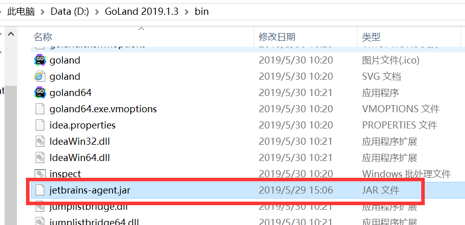
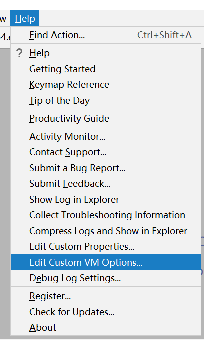
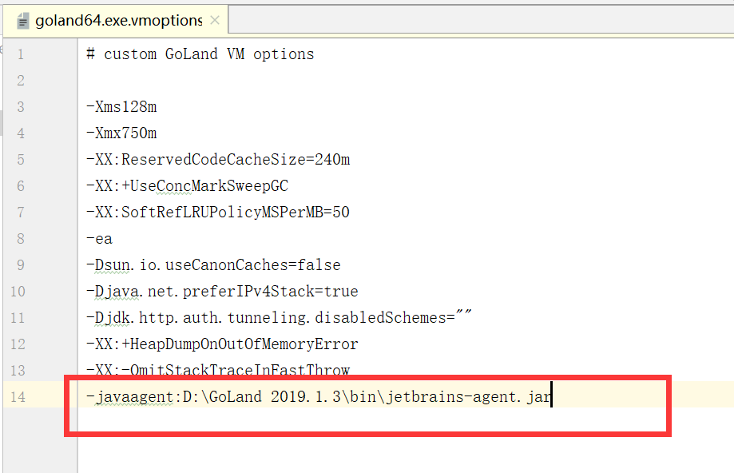
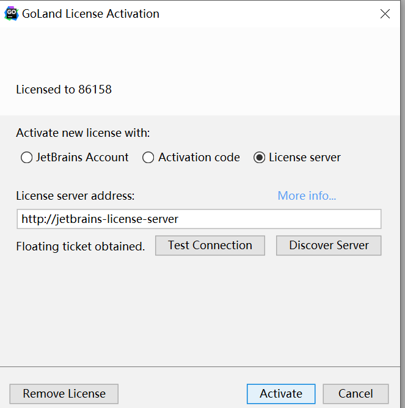
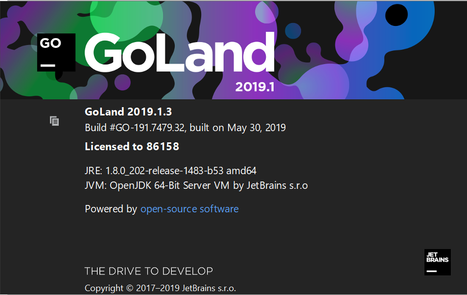

安装包下载：https://studygolang.com/dl
一直点下一步安装即可，默认是安装在“C:\Go”，如果自己换成其它目录则需添加环境变量。
liteide是一款免费的IDE
安装包下载：https://sourceforge.net/projects/liteide/files/x36/
GoLand 是 JetBrains 公司推出的 Go 语言集成开发环境，开发效率高。
下载地址：https://www.jetbrains.com/go/，正版的只能使用30天，下面介绍破解方法。
（1）先下载压缩包解压后得到jetbrains-agent.jar，把它放到D:\GoLand 2019.1.3\bin下面。

（2）打开IDE,Help-->>Edit Custom VM options

在打开的编辑窗口最后一行添加

（3）重启IDE，Help-->>Register-->>License server
地址填入：http://jetbrains-license-server （应该会自动填上）,或者点击按钮："Discover Server"来自动填充地址。

（4）通过上面的步骤就激活成功了
